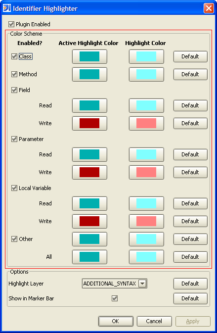

Color Scheme
There are many different options relating to the colors used in the highlighting of
identifiers. Each type of identifier can have its own active highlight color and
regular highlight color. The active highlight color is used when the text cursor is
placed on that instance of identifier. The regular highlight color is used for all
other instances in the same file of that identifier.

The types of identifiers that are supported are {Class, Method, Field, Parameter, and Local
Variable}. Anything that doesn't fit into those types are considered Other. In
addition to customizing the color for these different types of identifiers, the highlighting
can be toggled on or off with the Enabled? checkbox.
Read/Write
Certain types of identifiers {Field, Parameter, and Local Variable} can be read or written to
in the code. In other words, every time a new value is assigned to one of these special
types of identifiers, it is considered a write. All other usages of these special types
of identifiers are considered reads. The distinction between a read and write can
further be customized with separate colors. This makes it easy to spot all places where
a certain variable is changed in value.